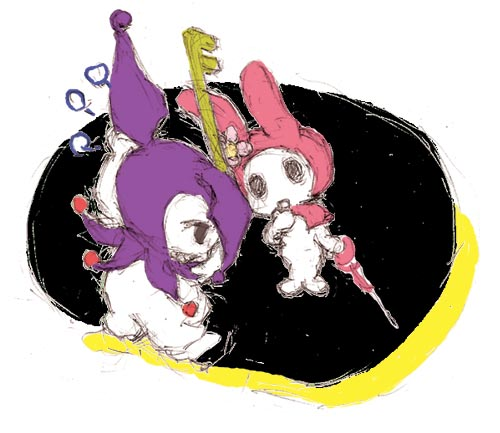

▼
pixivで先行公開しましたが、はなまる幼稚園杏ちゃん絵ｖ
最初はディフォルメがきつすぎて萌えないかなーと思ってたんですが、
すごい設定萌えｖ 親公認で幼稚園児と恋人とかおいしすぎます＞＜
自分、このくらいの頭身だと脳内補完ｗ
漫画は読んでないのでこれからの展開にも期待ですｖ
（更新日 10年1月23日SAT.）
▲
▼

NHK教育で月～金PM5:40から放送中のアイ！マイ！まいん！
主人公のまいんちゃん(二次元のほう^^;)絵チャ描きです～ｖ
パソコンのモニタがワイドになったので、
タブレットの描画領域も16:9に合わせたのですが
なんか斜めの線とか引きにくく、
「これは慣れなのかな？それとも比率とか間違えたかしら…」と。
前番組の味楽る！ミミカの方が好きだったのに
先に絵を描いたのはまいんちゃんという…(^^;
仕上がりがどうしてもラフな感じになっちゃうので苦手だったタカミン絵チャ、
拡大機能がついてけっこう綺麗に仕上げられるようになったので
これからもりもり参加してゆきたいですｖ
09年7月に描いた絵
（更新日 09年7月29日WED.）
▲
▼

コミスタ練習らき☆すたかがみ初描き絵。左の絵などはほとんど模写で
自分らしく描けなかったような気もしますが、いつもの絵と違う、
太い線(コミスタのＧペン)で描くのも面白かったりしました。
でもやっぱり私の基本はやわらかくふわふわに描きたいので
従来通りのシャーペン線画のカラー絵も頑張っていきたいと思いますｖ
08年11月に描いた絵
（更新日 08年11月29日SAT.）
▲
▼
昔の絵よりむしろここ数年の絵を見られる方が恥ずかしい自分は何なんだろうと思い
スージーちゃんとマービー本に使った絵(Log House(※ﾌｧﾝｻｲﾄ 成年向け画像有り)さんとの合同誌・在庫無し)などを
一応、人の見えるところに置いておきます…
2000年春～夏頃に描いた絵
（更新日 06年7月3日MON.）
▲
▼
明日の３～４話が待ち遠しいアニ横
原作１巻も買っちゃった(^^;
イッサ、イヨ、ケンタ
名前の由来がみんな面白い
絵は本編と関係ありませんが、
なんとなくお人形と女の子という
イメージで、こう
06年10月に描いた絵
（更新日 06年10月10日MON.）
▲
▼

ちばさまちばさまアンナたま
久しぶりに見返しましたレジェンズ５話
切なげな表情に惹き付け上手なしぐさに表情
べったりなシュウにお母さんのような対応でもあり
不思議な魅力いっぱいのアンナちゃん
この話だけは何回でも見返せます。かわいい～ん
▲
▼

ふたご姫～。ファインを練習してがんばってみました（ファインだけかよ；） レインもかわいい。
ケンカしたときファインのドジにあきれてたのを見て、普段はお姉さんな気持ちで見守ってる、という感じなのかなぁなどと
絵はOPのファインがバック持ってる版？ やっぱり一緒にかしまし娘なのがふたごらしい。
作品、これからもキャラだけでなくはーとで大まかカバーされてくといいなぁ
サイズ迷ったので大きめのも；
▲
▼

たびたび見かけるクレヨン王国32話４月の旅IVに感銘を受けたとの話
自分もおにぎり国軍とハンバーガー国軍の間に立つシルバー王女の大演説、当時感動したのでちょっと書きます。
買っておいて未開封だった(^^;)セルビデオ８巻で見返しました。
自分の主張にはフォローもいらずと「私がしゃべってんのよ！！」
これまでの事全部飾らずさけぶ王女、泣いて怒ってわめいてだねて
すごくシルバーらしくて格好良くて、ああ、本当に愛おしい幼さ、強さ
今見ても泣けます。32話の前にちらりと見た配達されない手紙を食べる羊の話にも不意にドキッとさせられたり
やっぱりクレヨン王国は良いものだなぁとしみじみ。
▲
▼

DVD-BOX発売（買えないけど；）クレヨン王国のシルバー王女
１２歳の設定合わせで等身高めで描くのが好み(左)ですが、たまには幼くシルバー幼女(右)
入院生活終わる間際に描きました。ようやく退院～
▲
▼

ミルキー姫、エクリプスの事は言わない
ひみつを守れる赤ちゃん
他の人には見せられないような
シェイドとミルキーのあれやこれ、想像しちゃいます
▲
▼
ムシキング、チビとセランたん
気持ち通じ合えてるって感じの
おちびちゃん二人というのは萌えます…♪
▼

遅らばせながらマイメロ１１話（料理話）、１２話（会えたらいいな）を見る
…あまりのカオスっぷりに吹き出しました
絵は何も見ずに描いたので色々間違ってます
▲
▼

５月頭頃に描いたマイブームキャラ描き～。只今入院中；
おさるファインも良かったですが、個人的にタネタネ国でのプリンセスパーティとかの様子が楽しみです
▲
もどる《


{kind=link}